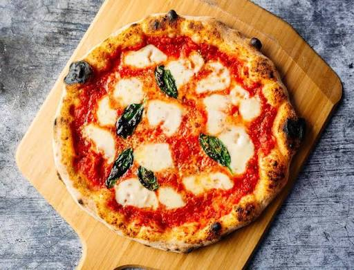

Mein Lieblingsessen
Pizza

Zutaten
| Zutat |
Menge |
| Mehl |
500 g |
| Wasser |
300 ml |
| Hefe |
1 Packung |
| Tomatensoße |
200 ml |
| Mozzarella |
250 g |
| Salami |
100 g |
| Salz |
1 Teelöffel |
Zubereitung
- Mehl, Wasser, Hefe und Salz in eine Schüssel geben.
- Alle Zutaten zu einem Teig vermischen und gut kneten.
- Den Teig ungefähr 30 Minuten ruhen lassen.
- Den Teig ausrollen und auf ein Backblech legen.
- Die Tomatensoße auf dem Teig verteilen.
- Mozzarella und Salami auf die Pizza legen.
- Die Pizza bei 220 Grad ungefähr 15 bis 20 Minuten backen.
- Die fertige Pizza aus dem Ofen nehmen und servieren.